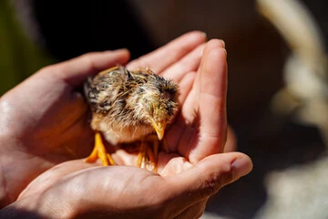

Every one of them has a story.
Some came in broken. Some came in terrified. Some just ran out of time somewhere else. Every one of them landed here because someone refused to give up on them. Scroll to meet the animals looking for a home — and the ones who already found one.
Animals looking for a home
These animals are ready — or close to it. Some need a permanent home. Some need a foster to bridge them to one. Either way, opening your door saves a life and makes room for the next animal we couldn’t otherwise take.
Loading animals…
Not ready to adopt? Your tax-deductible donation keeps these animals fed, healthy, and cared for while they wait for a home.
Donate to support themHow adoption works
We want every placement to stick. That means taking a little time to make sure the animal and the home are the right fit for each other.
Submit an application
Contact us to request an adoption application or ask questions about a specific animal.
Home check
We conduct a brief home check to make sure the environment is safe and secure for your new companion.
Meet & greet
Once approved, we’ll arrange a meeting. If you have other pets, we require a safe, supervised introduction.
Welcome home
Sign the adoption agreement, pay the adoption fee, and welcome your new family member. We cover all necessary medical expenses beforehand.
These animals are home.
Some animals arrive too old, too injured, or too bonded to this place to be placed elsewhere. They live here permanently, cared for by our volunteers every day. They’re not looking for a new home — but they are why we need yours.
Every resident here depends on donations to cover their daily care — food, vet visits, hoof trims. Your gift keeps them safe.
Support the residents